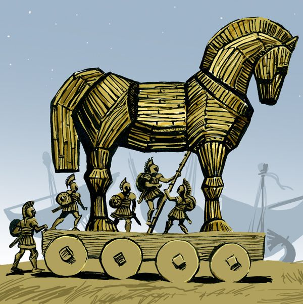

Introdução
Alguns dos personagens mais famosos da Mitologia Grega eram os heróis, também conhecidos como semi-deuses.
Muitos desses heróis lendários eram conhecidos por teem matados criaturas horrendas, terem lutado em guerra,
se tornado reis entre outros grandes feitos. Alguns desses personagens são conhecidos até hoje, são representados em
filmes séries e livros e estão muito difundidos na cultura pop.
Mais Famosos

Os heroís mais famosos atualmente são Herácles dos 12 trabalhos (o nome grego de Hércules, que era seu nome em no Império Romano),
Perseu o matador da Medusa, Teseu o herói ateniense que livrou seu povo do minotauro. Esses heroís esses heroís várias obras modernas
e suas histórias têm em comum grandes atos de valentia que livraram a população local de monstros.
Homero
Os Aquiles e Odisseu (também conhecido como Ulisses) são os protagonistas dos poemas épicos mais importantes da História da Literatura (Ilíada e Odisseia),
conhecidos por terem parrticipado dos eventos da guerra de tróia são um dos fatores para a popularidade dos mitos gregos. O suposto escritor dessas obras, Não se
sabe se o escritor dessas obras, Homero, realmente existiu.
